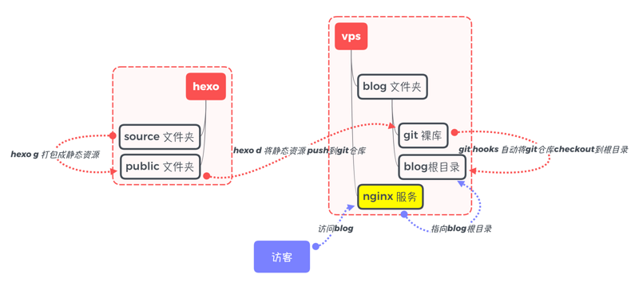

一开始折腾Jekyll，后来使用hexo搭建博客托管在了Github Page上。再后来，买了VPS（主要是为了学习Sock5！），博客便迁移到自己的服务器了。本文主要记录使用CentOS结合hexo搭建个人博客的流程。
更新：因为IP间歇性被封，重新部署了一遍，配置HTTPS，Hexo发布流程也改了。有时间再整理出来！
本人使用的是Vultr的VPS，Vultr实际上官网有专门撰文介绍了在CentOS上搭建hexo。下面看实际踩坑后的总结：
# 基本原理
hexo的发布其实比较简单，就是将静态博客站点托管在VPS上而已。请看流程：

hexo在本地机器生成发布文件后，通过git推送到VPS上，并且VPS上的git仓库配置了git-hooks，在接收到git仓库更新后，将内容拷贝到web服务站点即可。
# 环境配置
本地：
- Mac OS 10.13.6 (默认包含git、ssh等工具)
- Node.js (使用nvm管理)
- hexo: 3.8.0（请参照官网搭建）
VPS：(Vultr)
- CentOS 7
- git 2.17.1
- nginx
环境搭建、ssh连接vps这些自不必多说了，参考官方介绍或Google一下即可。
# 整体流程
参照基本原理图，整体流程如下：
1、服务器基本环境搭建，安装Git、Nginx等
2、服务器配置Nginx
3、服务器创建Git仓库，配置git-hooks
4、本地发布并部署
VPS安装Git及Nginx
1 | yum install git |
使用git —version及nginx -v检查是否安装成功。
VPS配置Nginx
nginx的目录一般是在/etc/nginx/，建议先备份一下nginx.conf文件。
cd /etc/nginx/
cp nginx.conf nginx.conf.backup
需要修改配置文件中http配置，可自行了解nginx后再处理，我的配置如下：
1 | user nginx; |
在http末尾添加include /etc/nginx/vhost/*.conf;。这是为了将多个不同服务隔离配置。对于有多个（子）域名的时候，就非常方便了，并且互不影响。
在/etc/nginx/vhost目录（若没有请新建）下建立配置文件，比如我的技术博客是 tech.kernelsense.com.conf，配置如下：
1 | server { |
主要是配置server_name以及对应的服务根目录root。你姑且可以参考我的配置来。
配置保存后，可以nginx -t检查配置文件语法是否有问题。systemctl status nginx检查nginx状态，running为运行中正常。
VPS创建git仓库
创建git用户
首先需要创建git用户，专门用来管理git仓库，方便ssh访问。
基本命令记录如下：(有问题请自行Google解决)
1 | adduser git |
在以下内容下方：
1 | ## Allow root to run any commands anywhere |
添加一行：
1 | git ALL=(ALL) ALL |
保存后恢复sudoers权限为400：chmod 400 /etc/sudoers。
配置ssh访问
su git切换用户后，将本地机器的相关服务的ssh的rsa公钥添加到vps上：
1 | vim ~/.ssh/authorized_keys |
在本地机器进行测试：
1 | ssh -v git@vps_ip |
创建博客的git仓库
在git用户目录下创建：
1 | git init --bare tech.git |
是在su git情况下，否则需要修改权限：
1 | sudo chown git:git -R /var/www/tech |
创建git-hooks
在切换到git用户后，在相应的git仓库下
1 | vim ~/tech.git/hooks/post-receive |
配置如下：
1 | #!/bin/bash |
原理如上所述。
根据个人需要修改目录。保存后执行chmod +x post-receive添加执行权限。
本地部署
修改本地hexo的站点配置文件_config.yml，一般在末尾，配置：
1 | deploy: |
若未安装deploy插件，请安装：
1 | npm install hexo-deployer-git --save |
部署步骤很简单：
1 | hexo clean |